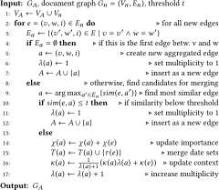
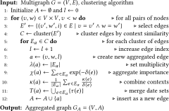

This is a web copy of https://doi.org/10.1145/3184558.3188726 Published in WWW2018 Proceedings © 2018 International World Wide Web Conference Committee, published under Creative Commons CC By 4.0 License. The modifications from the original are solely to improve HTML aiming to make it Findable, Accessible, Interoperable and Reusable. augmenting HTML metadata and avoiding ACM trademark. To reference this HTML version, use:
Permalink: https://w3id.org/oa/10.1145/3184558.3188726
DOI: https://doi.org/10.1145/3184558.3188726
WWW '18: Proceedings of The Web Conference 2018, Lyon,
France, April 2018
The increasing number of news outlets and the frequency of the news cycle have made it all but impossible to obtain the full picture from online news. Consolidating news from different sources has thus become a necessity in online news processing. Despite the amount of research that has been devoted to different aspects of new event detection and tracking in news streams, solid solutions for such entangled streams of full news articles are still lacking. Many existing works focus on streams of microblogs since the analysis of news articles raises the additional problem of summarizing or extracting the relevant sections of articles. For the consolidation of identified news snippets, schemes along numerous different dimensions have been proposed, including publication time, temporal expressions, geo-spatial references, named entities, and topics. The granularity of aggregated news snippets then includes such diverse aspects as events, incidents, threads, or topics for various subdivisions of news articles. To support this variety of granularity levels, we propose a comprehensive network model for the representation of multiple entangled streams of news documents. Unlike previous methods, the model is geared towards entity-centric explorations and enables the consolidation of news along all dimensions, including the context of entity mentions. Since the model also serves as a reverse index, it supports explorations along the dimensions of sentences or documents for an encompassing view on news events. We evaluate the performance of our model on a large collection of entangled news streams from major news outlets of English speaking countries and a ground truth that we generate from event summaries in the Wikipedia Current Events portal.
CCS Concepts: • Computing methodologies → Information extraction; • Information systems → Document representation;
ACM Reference
Format:
Andreas Spitz and Michael Gertz. 2018. Exploring
Entity-centric Networks in Entangled News Streams. In
WWW '18 Companion: The 2018 Web Conference
Companion, April 23–27, 2018, Lyon,
France. ACM, New York, NY, USA 9 Pages. https://doi.org/10.1145/3184558.3188726
Reading it in the paper in the morning is a common idiom for catching up with the news that is becoming increasingly less applicable. Putting aside the obvious departure from printed news, both the temporal aspect and the grammatical singular are less and less accurate. News are not reported and consumed in the morning but in a constant news cycle throughout the day, published by a multitude of news outlets with varying degrees of reliability, political bias, and overlapping content. It is these entangled streams of news that the reader has to wade through to stay informed. Despite similarities between the news cycle and streams of microblogs, social media cannot take on the mantle of investigative journalism, which relies on argumentative texts and is less focused on the instant than it is on the evolution of stories. In this context, the so called Five Ws of Who?, When?, Where?, What?, and Why? are questions of central importance that serve the journalist and the reader in uncovering news. Naturally, these questions put an emphasis on entities as pivotal components of news. In information retrieval, this is reflected in the definition of an event as something that happens at a given place and time between a group of actors [2], originating in topic detection and tracking and highlighting the central role of entities for inducing structure in the unstructured texts of news articles.
In large entangled news streams, far more than one news article tends to be required to retrieve the full picture [32]. However, a lot of information is replicated between or even within individual news streams and thus redundant. Intuitively, this motivates two major subtasks in automated news analysis: identifying event mentions in unstructured texts, and aggregating them across documents. These tasks are referred to as new event detection and event tracking [3], and can be augmented by detecting topics [7] that put individual documents into context. To make identified events accessible to users, a central step is thus their aggregation into threads of events along some dimension(s). Many different approaches have been proposed to this end. Some focus on a geographic aggregation and visualization of news sources [33], while others focus on the temporal aggregation [12], or both [38]. Alternative approaches use the participating entities directly [9, 16, 30]. In the case of a temporal aggregation, different temporal dimensions can be considered, such as the dates in the documents [21], or external information such as the publishing date [4] and edit histories [15]. With regard to timelines, another important aspect is then the temporal order, as the SemEval-2015 task for cross-document event ordering shows [20]. Beyond the above dimensions, more recent approaches include aggregation on a topic level [1] or based on word embeddings [22].
When considered for contrastive explorations of content, the above approaches suffer from two critical drawbacks: the limited number of aggregation dimensions and the aggregation granularity level. No existing approach covers the entirety of available dimensions and it is indeed questionable whether an aggregation along all dimensions at once is realistically possible. Perhaps even more critically, the results are always coarse structures due to an aggregation either on the document, event, or topic level. However, events are commonly defined as composite mentions of (named) entities, which form the stitching points between individual news streams. After all, we consume news about people, organizations, or locations of interest and follow them over time and in different contexts. Is it then not a more reasonable approach to retain this entity-centric structure of news in a suitable document representation for subsequent analyses, and aggregate only where necessary and in exactly the dimensions that fit the exploratory task?
As a first step towards addressing this shortcoming, we introduce entity-centric implicit networks as a representation of entangled news streams. Based on the concept of implicit entity networks for static document collections [27, 30], we include entity relation information, a spatial and two temporal dimensions (temporal expressions and publication metadata), and the context of mentions in a comprehensive framework for entity-centric analyses. On the technical side, our model addresses the inherent scaling issues of entangled news streams by utilizing efficient entity-centric queries to localized graph substructures, and the streaming graph updates take advantage of incremental adjustments to relevance measures for queries against the data [8, 36]. Furthermore, the implicit representation serves as an (inverse) index for retrieval tasks without requiring the storage of proprietary news article content. On the application side, our model provides a more fine-grained and versatile representation of entangled news streams than any previous approach. Instead of utilizing document- or event-centric indexing, we focus on the level of entities and contexts and use them as stitching points between individual news threads. The model supports a wide range of tasks, including entity-centric topic and event extraction and tracking, contextual search, contrastive source comparison, and exploratory visualizations of the underlying streams.
Contributions. Our contributions are fourfold. (i) We propose a comprehensive model for entity-centric exploration and retrieval tasks on large entangled news streams. (ii) We discuss graph-based context-sensitive clustering of joint entity mentions in both static and streaming applications. (iii) We introduce a clustering of entities along naturally evolving topics that does not suffer from a pre-defined number of topics or topic degradation at low ranks like traditional topic models. (iv) We evaluate our model on a large entangled stream of news from international outlets. We provide the resulting network data, including links to the original articles1.
To our knowledge, no previous work supports the comprehensive, entity-centric exploration of entangled news streams. Thus, we give an overview of works that cover some of these aspects.
Entity-centric Exploration and Analysis. A fundamental result in entity-centric document analysis with strong emphasis on the detection of event descriptions is by Feng and Allan, who formalize the concepts of incident threading and event threading [11]. While event threading captures the internal structure of news topics by adding causal or temporal relations, incident threading merges mentions of identical entity cooccurrences. Later works utilize similar concepts. Kanhabua et al. assess the importance of temporal expressions based on the cooccurrences of entities and temporal anchor texts within individual sentences [15]. Gupta et al. present EventMiner, a framework for extracting events from collections of documents [13] that is very comprehensive in its use of temporal expressions and named entities, but does not scale. Mishra and Berberich link coarse-grained events from news articles to corresponding Wikipedia pages [21]. Similarly, Ceroni et al. use entity mentions and temporal information to confirm the occurrence of events in a document collection [9]. Although the above works focus on entities, they only consider static document collections and do not support entity-centric exploration or streaming news.
Analysis of Articles in News Streams. A number of frameworks offer comprehensive analyses of streaming news. Lydia is a large-scale aggregation tool for news articles [17] with numerous subsequent publications. The European Media Monitor builds and processes a repository of multilingual European news articles [5]. News Stand monitors and retrieves RSS feeds to extract geographic content from articles for spatial clustering and visualization [33]. The enBlogue system allows the identification of emerging topics from news streams in real time [4], but has so far been applied with a focus on blogs and microblogs. A shortcoming of the above approaches is the lacking support for entity-centric explorations.
Ahmed et al. combine topic modeling, clustering and named entity recognition to distinguish topics, story lines, and entities in streaming news articles [1], but do not include the effects of entity cooccurrences. To support ad-hoc tracing of news streams, Vuurens et al. utilize the clustering and qualification of titles and sentences in news articles [35]. Moran et al. introduce the use of word embeddings to enhance first story detection in microblogs [22].
Many further approaches to streaming news analysis exist, but few of them consider temporal information, and none of them include temporal information along with entities, terms, and topics.
Network-based Document Models. Yang et al. classify news documents into topics and measure topic novelty by using both keywords and named entities with relative weighting for event-level novelty detection [37]. For a similar purpose, Das Sarma et al. build entity dynamic relation graphs to identify entities participating in trending events, but exclude locations [26]. More generally, Blanco and Lioma explore a network-based approach that models terms as nodes in a graph with edges weighted by cooccurrence counts [6]. Rousseau and Vazirgiannis use an unweighted but directed graph to account for term order in a document's text [25]. They focus on the sentence level and do not include entities, thus limiting the capability of the model for entity exploration.
All of these approaches use graphs to answer specific questions about a document collection or stream. Here, we focus on a comprehensive network representation that supports a multitude of subsequent analyses. A similar approach was recently presented by Spitz and Gertz [27, 30], who construct an implicit network of entity mentions from a static document collection to support exploratory tasks. While their model could be adapted to support efficient streaming updates, an exploration along the dimension of publication dates or the context of entities is not included. In the following, we thus describe how a more general implicit network model can be realized in a streaming environment.
Based on the intuition that entity relations can be derived from joint entity mentions, we construct a network of entity relations from the named entity classes locations, organizations, actors, and dates. Together, these form the basis of the LOAD model for implicit networks [30], which we improve from a static to a streaming model by adding (i) term embeddings to encode the context of entity mentions for refined queries, (ii) an adaptation to the news domain by considering publication times as a second temporal dimension beyond temporal expressions in the documents, and (iii) an adaptation to entangled news streams and concurrent events by using a multigraph model with (partial) edge aggregation schemes.
Let N be a collection of news articles. Each document n ∈ N consists of sentences s ∈ n. We denote the set of all sentences in all documents as $S:=\bigcup _{n \in N}\lbrace s \in n\rbrace$ . To consecutively number the sentences, let $\sigma : S \rightarrow \mathbb {N}$ map a sentence to its index in the document in which it occurs. We then consider each sentence to be a collection of words, which we partition into entity classes.
Graph Nodes. In the following, we consider words to be units within a text that has been tagged for named entities. We distinguish between the named entity classes locations L, organizations O, actors A, and dates D, according to the LOAD model. All remaining words constitute the set of terms T, which is defined as
Graph Edges. To obtain a graph representation G = (V, E), we construct a set of edges E ≔ EC ∪EP based on two criteria: containment and proximity. Containment represents edges EC between entities and sets, such that an entity is connected to a set that contains the entity. This type of edge provides provenance and context information for entities. Proximity edges EP encode the cooccurrence of entities within at least one common document and represent implicit entity relations. Edges of the proximity type introduce parallel edges in the graph since one edge is induced whenever two entities cooccur. To distinguish between parallel edges, we rely on instances $I \subseteq \mathbb {N}$ of entity cooccurrences, along with an injective mapping ι: V × V → I. Here, i = ι(v, w) ∈ I represents an instance of the cooccurrence of two entities v and w in some unique ordering, such that the tuple e = (v, w, i) denotes an edge between v and w. For example, if entities v and w cooccur in a document, this induces an edge (v, w, i). If they later cooccur again, we obtain a new edge (v, w, j). Note that a document may contain multiple instances of the same entities. Formally, we obtain
To assign weights and attributes, we distinguish between edges of the containment type EC and edges of the proximity type EP .
Set Containment Edges. Edges of the containment type are binary relations. Therefore, the resulting edges are essentially unweighted, although parallel edges may occur in rare cases. To simplify the subsequent notation, we define a distance function $\delta : E_C \rightarrow \mathbb {N}$ for edges between an entity v and a sentence s as δ(v, s, i) ≔ 0 if v ∈ s, and δ(v, s, i) ≔ ∞ if v∉s. The distance between sentences and documents is defined analogously.
Occurrence Proximity Edges. Edges of the proximity type are more complex due to more finely nuanced distances and parallel edges caused by multiple cooccurrences. Since it is this entity cooccurrence information that encodes the relevant information for later analyses, we want to preserve these multiple edges and enrich them with additional information for later aggregation (see Section 3.4). We consider three fundamental concepts, namely (1) the publication time, (2) the textual distance between the mentions of two entities, and (3) the context of the mentions.
Publication Time. We assume that a publication time or retrieval date is known for each news article. Let $\tau : N \rightarrow \mathbb {N}$ map each document n ∈ N to its publication time τ(n). Let ni be the document that contains an instance i inducing an edge e = (v, w, i) between two entities. We then assign τ(e) ≔ τ(ni ) to edge e.
Textual Distance. By overloading the function σ, we can map each entity of an instance to the index of the sentence in which this entity occurs. Thus, let σ(v, i) denote the number of the sentence in which entity v occurs in instance i. For example, if entity v in instance i occurs in the first sentence of a document, then we have σ(v, i) = 1. In analogy to the LOAD model, the textual sentence distance $\delta : E_P \rightarrow \mathbb {N}$ of two entities can then be written as
Context Embeddings. To conserve the context of joint entity mentions, we use a vector embedding of terms in the context window of two entities. Formally, an embedding is a function $\varepsilon : T \rightarrow \mathbb {R}^k$ that maps a term to a point in a k-dimensional vector space. To obtain the context of two entities in a cooccurrence instance, we define a context window as a function of those entities. Let ω: EP → 2 S , such that ω maps an instance to a set of sentences. Specifically, let ni be the document containing an instance i, then
We now lay the foundations for the entity-centric exploration of news in their context. A shortcoming of the LOAD model is the aggregation of all parallel edges to obtain a simple graph. While such an aggregation makes graph representations of large document collections feasible, it does not distinguish between mentions in different contexts. In news analysis, however, the number of contexts in which two entities cooccur is limited. Thus, aggregating edges by context still results in a stark reduction of the number of edges, while also preserving the context of entity cooccurrences for later analyses. Here, we argue that such an approach should be flexible enough to handle arbitrary numbers of contexts. Furthermore, an aggregation by context partially preserves the multiplicity of edges, while simultaneously collapsing unjustifiably duplicate edges to enable a more focused extraction of information from the resulting graph. In particular for entangled streams of news articles with redundant information, such an approach is clearly beneficial.
To obtain an aggregated graph GA = (V, A), we require a new set of aggregated edges A with aggregated attributes. Let v and w denote two entities and let Ia denote a set of instances that induce parallel edges Ea ≔ {(v, w, i) ∈ E | i ∈ Ia } between them. In the following, we discuss how to derive the aggregated edge features.
Aggregated Edge Importance. This weight derives an overall strength of the relation between two entities from the sentence distances of individual edges. Here, the dissimilarity of a sentence distance is transformed into a similarity by a decaying exponentiation. The individual similarities are then added over all aggregated edges. Thus, we compute a weight for the aggregated edge a = (v, w, j) as
Aggregated Publication Dates. For a temporal analysis, we store the set of all publication dates, which we assume to be distinct as long as the granularity of time is fine enough. For lower granularities, this attribute is effectively a multiset of dates. Formally,
Aggregated Context. The context is the primary component of the edge aggregation (see Section 3.4). However, once edges are aggregated, a single context vector is sufficient to represent an edge and facilitate context-sensitive queries. Therefore, the contexts of individual edges can be aggregated as the mean of the context vectors. Since the context of two entities whose mentions are separated by a couple of sentences is likely less important than two mentions within the same sentence, we normalize individual contributions by the distance of the mentions δ. Thus,
Number of Aggregated Edges. To maintain the context centroid in the streaming aggregation model, we store for each edge the number of individual edges that were aggregated. Thus, we define an attribute function $\lambda : A \rightarrow \mathbb {N}$ with λ(a) ≔ |Ea |.
Based on these four attributes, parallel edges in G = (V, E) can be combined to create the aggregated graph GA = (V, A) as we describe in the following. For containment edges, only the importance and the number of aggregated edges are meaningful. For the importance of containment edges, note that the exponentiation turns the distances into a value of 1 for existing edges and 0 for missing edges. An overview of edge attributes is shown in Table 1.
| τ | publication time | ω | context window | ||
| δ | textual sentence distance | κ | context embedding | ||
| σ | sentence index | λ | # aggregated edges | ||
| ι | instance of cooccurrence | η | node type | ||
| ɛ | term embedding | χ | edge importance |
For edge aggregation, two settings are possible. If real-time queries on streaming data are of interest, a streaming aggregation can be used to process news articles as they come in, and merge new edges to existing ones. Conceptually, this resembles streaming first story detection for microblogs [23] but retains the entire contextual information. Extracted edges are treated as information fragments that can be merged with existing edges (if the context is sufficiently similar) or treated as new edges (if the context is sufficiently different). We refer to this as the streaming approach. Alternatively, all edges of all articles can be stored to retain the unaggregated information. In this case, the edges are aggregated locally between pairs of nodes at query time. We refer to this as the static approach.
Streaming Edge Aggregation. Streaming aggregation supports a real-time analysis of news articles as they become available and utilizes a similarity threshold parameter t. As new articles n are added to the collection, multigraph representations Gn = (Vn , En ) are constructed. Each edge in Gn is inserted into the collection graph GA by aggregating it with existing edges based on context similarity. Here, any suitable vector similarity measure can be used to compare the embeddings. We distinguish between three cases for a new edge e = (v, w, i) ∈ En . (1) If e is a containment edge, it is added to the set of aggregated edges A. (2) If v and w are disconnected in GA , then e is added to A. (3) Otherwise, if GA already contains edges between v and w, we check if e is sufficiently similar to the centroid context vector of an existing edge and aggregate it with the existing edge a ∈ A that is the best fit and update the edge attributes accordingly. If no existing edge is similar enough, e is inserted into A. For a detailed description, see Algorithm 1 .


Static Edge Aggregation. The static aggregation of edges is a post-hoc processing of the collected news stream, in which parallel edges are clustered. Here, a clustering approach without a fixed number of clusters is required, as the optimal number of aggregated edges per pair of nodes is unknown and highly varying for different pairs of nodes. Additionally, outliers and noise should be kept separate from the clusters since many news articles do not belong to major news stories. After clustering, edges within each cluster are aggregated into a single edge. See also Algorithm 2 .
Complexity. The complexity of the streaming approach is in $\mathcal {O}(I \cdot \langle p \rangle)$ , where ⟨p⟩ is the average multiplicity of parallel aggregated edges between node pairs. The number of instances I scales linearly with the number of articles N for a given cooccurrence window size, and ⟨p⟩ is small enough to support similar edge detection by linear scans, as we show in Section 5.4. The complexity of the static approach is higher with $\mathcal {O}(I\cdot C)$ , where C is the complexity of the selected clustering algorithm, which is likely at least quadratic in the edge multiplicity of unaggregated edges. However, due to the localized clustering, the approach is parallelizable by node pairs.
Stability. Both approaches produce deterministic results, although this depends on the temporal order of articles in the streaming approach. Obviously, the aggregated graphs differ between the two approaches. In Section 5, we compare their efficacy. In practice, the static approach can be applied in a streaming setting if sufficient memory is available to cluster edges locally at query time.
Based on the above model, we consider application scenarios in which such a representation supports the exploration of news, and show exploratory results on a large stream of news articles.
Exploration Focus. Using an implicit network representation, any task that can be formulated as entity or term rankings or the extraction of weighted entity graph patterns is viable. In particular, events as dyadic or triadic structures of entities can be queried efficiently [27]. Due to the transitivity of edge aggregation (edges can always be aggregated further), all entity-centric exploration methods designed for LOAD also work on our context-enriched model. We thus focus specifically on novel exploration methods that utilize temporal data and the context of entity mentions to extract evolving entity-centric topics from entangled news streams.
In the following, we describe the acquisition and preparation of the news data as well as the construction of the graph representation.
Data Collection. Since we require entangled news streams from multiple outlets, standard corpora such as the New York Times corpus cannot be used. Instead, we collect articles from the RSS feeds of international outlets with a focus on quality news. For content extraction, we use manually created rules since these allow a clean extraction of article contents (including multi-page articles) at a level that automatic boilerplate removal does not support [29].
Specifically, we use articles from 14 English speaking news outlets located in the U.S. (CNN, LA Times, NY Times, USA Today, CBS News, The Washington Post, IBTimes), Great Britain (BBC, The Independent, Reuters, SkyNews, The Telegraph, The Guardian), and Australia (Sidney Morning Herald). The RSS feeds of these outlets differ, but we focus on feeds related to political news. The time frame for our data collection is June 1 to November 30, 2016. We remove articles that have less than 200 or over 20,000 characters (due to NER limitations) or more than 100 disambiguated entities per article (i.e., lists). The final collection contains 127,485 articles over a period of six months, with a total of 5.4M sentences.
Data Preparation. Data preparation consists of five steps: recognition of named entities, entity linking, entity classification, part-of-speech and sentence tagging, and temporal tagging. For the recognition and disambiguation of named entities to Wikidata IDs, we use the Ambiverse API2. To classify named entities into actors, locations, and organizations, it is possible to use Wikidata hierarchies directly, but this can be problematic due to their constantly evolving structure [28]. Therefore, we map Wikidata IDs to YAGO3 entities [18] and classify them according to the YAGO hierarchy. For actors, we use the class wordnet_person_100007846, and for organizations wordnet_social_group_107950920. For locations, no comprehensive WordNet class exists, so we use yagoGeoEntity, which was designed for this purpose [14]. For the extraction and normalization of temporal expressions we run HeidelTime in the news domain setting [31]. Finally, for sentence splitting and part-of-speech tagging, we use the Stanford POS tagger [34].
Network Construction. We proceed as described in Section 3. Terms are stemmed with the Porter stemming algorithm [24], and we impose a minimum word length of 4 characters for terms. The window size for entity cooccurrence extraction is set to 5. As context embeddings, we use Google's pre-trained 300-dimensional word2vec [19] word embeddings. The resulting networks has 5.7K dates, 27.7K locations, 72.0K actors, 19.6K organizations, and 351K terms, which are connected by 83.4M edges (before aggregation).
To highlight an exploratory application, we demonstrate the extraction of contextual topics. We extract topics that best describe the individual contexts in which two entities are mentioned together and consider their evolution over time. Naturally, multiple such contexts may exist, which is reflected by the multiple parallel edges.
Contextual Topics. Recall that a context vector κ(a) is associated with each aggregated edge a = (v, w). We define a contextual topic of edge a as a weighted list of terms that describe the context in which entities v and w occur in instances included in a. To extract the contextual topics for all aggregated edges between these entities, we retrieve all terms $T_x = \mathcal {N}(v) \cap \mathcal {N}(w) \cap T$ in the joint neighbourhood of the two nodes along with all edges that connect them to v or w. We aggregate these edges such that each term x is connected to both v and w by exactly one edge, which we denote with av and aw . Based on these triangular structures, we obtain a ranking score for each term x ∈ Tx in relation to edge a as
Results. To demonstrate the expressiveness of contextual topics, we show a timeline visualization of topics for pairs of entities. To extract these, we use a cosine similarity of the context vectors and rank the terms as described above. Then, we assign to each edge between the two entities the k = 5 top-ranked terms as descriptors. We select the three top edges by multiplicity (i.e., the aggregated edges with the highest λ values). Since each such edge is associated with a set of publication times, we can plot the evolution of the topics over time. The results for two entity pairs are shown in Figure 2. On the left, we see the evolution of topics for Brazil and the IOC (i.e., the Olympic Games). One can easily identify contexts as dealing with corruption, sports, and the awarding of medals. Specifically, the award topic spikes precisely at the date of the games. The second example shows the relation of David Cameron to the United Kingdom during the Brexit crisis. While all three topics are related to this issue, the referendum topic spikes at the proper date and the shift between the remaining topics towards Cameron's resignation only after the referendum is pronounced.
In summary, the intuitive notion of aggregated edges as contexts corresponds well with our observations. Thus, term-based topic descriptors assign meaning to such edges, and their extraction serves to facilitate exploratory analyses of the news stream. Since the extraction utilizes only a localized substructure of the network around the focus entities, the process is efficient and allows a near real-time exploration of the entire entangled news stream. Alternatively, a subset of news outlets and focus entities can be selected by the user for a contrastive analysis between outlets, or context terms can be employed as additional input to quantify how a given news outlet reports about a specific group of entities.
To demonstrate the validity of our model beyond exploration, we evaluate the streaming and static approach on a set of news events.
We evaluate against LOAD as the only comparable implicit network model. The event completion task can be defined as follows: Given k − 1 out of k entities participating in an event, predict the remaining entity based on the data. We briefly describe the scheme used by LOAD for this task, before we present our improved version that includes the context. Both schemes rank entities x in the target set X ∈ {L, O, A, D} based on a set of query entities Q⊆L∪O∪A∪D.
LOAD Ranking (Baseline). This scheme applies a tf-idf-like scoring to the edges of the graph to rank entities x ∈ X based on a query entity q by computing a normalized importance score rL as
Context-based Ranking. In the context-sensitive model, two entities may be connected by more than one edge, which we use to differentiate between target candidates. Let Ea (x) denote this set of aggregated edges between a query entity q and an entity x in the target set. Furthermore, where available, we can include the context of the event description in the query to match the context of candidate entities. Let κ(q) denote the context of query entities in the event, which we include in the improved ranking
Static Clustering. We require a clustering algorithm without fixed clusters since it is impossible to divine a reasonable number of clusters that applies equally to all pairs of nodes. Thus, we select DBSCAN [10] with cosine as a distance measure. To obtain the necessary parameters ϵ and minPts, we conduct a number of preparatory tests and find that the result quality suffers for high values of minPts, while minPts = 5 works well. Since a value of minPts > |Ea | would be meaningless for edge aggregation, we use the scheme $minPts = \min \lbrace 5, \frac{|E_a|}{5}\rbrace$ , which performs best in our experiments. We then employ the min-points heuristic to obtain a reasonable value of ϵ = 0.3 as a starting point for the evaluation.
Context Extraction Schemes. To derive contexts for entity cooccurrences, we consider two schemes according to the definition in Section 3.2. For the complete context, we use the weighted average embedding of all non-stopwords inside the context window. Based on the importance of verbs for traditional event extraction, we also consider the verb context, for which we utilize only the embeddings of verbs inside the context window (we exclude all forms of the auxiliary verbs be and have). Both schemes are applied separately during network and ground truth construction.
Ground Truth Data. To extract ground truth events, we use the Wikipedia Current Events portal3, which contains manually maintained summarizations of news events. We crawl the pages for the months of June 2016 to November 2016 to extract each item as a news event. For NER and disambiguation, we use Wikipedia links in the text. Since the Wikipedia summaries contain references to news article sources, we match the references to articles in our input stream. We exclude all events that consist of less than two entities or have no reference to an article in our network. We obtain 97 individual events that correspond to at least one article in our collection. For each such event, we generate a query from each contained entity by using the remaining entities as query input and the removed entity as ground truth (i.e., an event with k entities induces k(k − 1) queries). We manually annotate the verbs in these event summaries. In total, we obtain 293 queries for the evaluation.
|
aggregation threshold
|
||||
|---|---|---|---|---|
| t = 0.3 | t = 0.4 | t = 0.5 | t = 0.6 | |
| complete | 0.218 | 0.218 | 0.232 | 0.253 |
| verb | 0.225 | 0.222 | 0.215 | 0.208 |
| LOAD |
0.157
|
|||
| LOAD |
stream aggr.
|
static clustering
|
||||
|---|---|---|---|---|---|---|
| complete | verb | ϵ = 0.2 | ϵ = 0.3 | ϵ = 0.4 | ||
| cor@1 | 44 | 71 | 61 | 35 | 27 | 25 |
| prc@1 | 0.165 | 0.266 | 0.228 | 0.131 | 0.101 | 0.094 |
| recall | 0.655 | 0.955 | 0.955 | 0.955 | 0.955 | 0.955 |
Each evaluation query has exactly one correct answer. Therefore, suitable evaluation metrics are precision@1, i.e., the fraction of queries in which the top ranked prediction is correct, and recall@k, i.e., the number of correct predictions among the top k predictions.
Streaming Aggregation. We first compare the two approaches for context generation over varying aggregation thresholds and show the resulting precision in Table 2. Threshold values of t < 0.3 are omitted since no further changes occur. Both methods outperform the LOAD baseline by a large margin (up to 61% improvement). The verb context aggregation shows a slight decline in performance with increasing threshold. The precision of the complete context increases with the threshold value and it performs better overall. In Figure 3 (top), we show the corresponding recall values of the complete context approach. Varying thresholds show little influence on recall, which makes low thresholds attractive in settings where a compact representation is important and recall@5 is sufficient.
Static Aggregation. In Table 3, we show the performance of the static aggregation for a subset of 267 evaluation queries (the remaining 26 clusterings did not finish within 48 hours). Due to this smaller evaluation set, the values for the static aggregation vary slightly. For some of the ϵ settings, the clustering performs better than the LOAD baseline, but not by a large margin, and higher values of ϵ decrease the performance. The recall values shown in Figure 3 support this observation. While static aggregation outperforms LOAD, it does not rival the streaming aggregation.
In summary, we find that streaming edge aggregation is superior to static aggregation in this setting. While other clustering algorithms may perform better, our tests were extensive and the ease of use for the streaming method is much higher. While the optimal parameter settings for clustering approaches are usually difficult to obtain, in the streaming approach there is a direct correlation between the threshold and the prediction quality. What remains is the issue of performance depending on the threshold selection, which we discuss in the following.
The streaming model is designed to reduce the number of aggregated edges that are stored in the graph to a manageable size and avoid redundancy. Especially for entangled news streams, many parallel edges with highly similar context are to be expected. In Figure 4, we show the number of aggregated edges as a function of the number of unaggregated edges for different threshold values applied to the complete context embeddings. We find that for thresholds t ≤ 0.3, aggregation is almost complete and there are never more than three parallel edges. For higher thresholds, this number increases but is still easily manageable. Since higher thresholds are favorable with regard to the extraction of information from the graph, the threshold thus has to be tuned to the data throughput in an application scenario. For the real-time processing of streams of news articles, this is unproblematic due to the relatively low volume of documents in the news domain. For higher frequency streams such as the entire blogosphere, more sophisticated data structures or similarity approximations may be desirable.
In this paper, we discussed the problem of entity-centric explorations of large entangled streams of news articles. Based on the intuition that entity mentions can serve as stitching points between potentially biased news streams and as focal points of news retrieval tasks, we introduced contextual implicit entity networks as a comprehensive and versatile tool for the representation of such entangled news streams. The model can be constructed faster than the publication speed of news articles by several orders of magnitude and thus efficiently facilitates a multitude of subsequent entity-centric information retrieval tasks from the underlying streams in near real-time, such as topic and event extraction and tracking, contextual search, descriptive sentence extraction, or document retrieval. Furthermore, it supports the interactive contrastive exploration and contextual aggregation of news published by multiple news outlets as well as their change over time. We evaluated the model's performance for different parameter settings on a large collection of news streams, and found that the streaming aggregation approach outperforms existing alternatives for the task of entity-centric event completion. Finally, we discussed an application of the model to the extraction of contextual and entity-centric topic detection and tracking as one example of news exploration in entangled news streams. Our implementation of the model along with all used data is available for further studies.
Ongoing Work. We are currently researching the extraction of evolving document topics from entity-centric topics, in a step towards the comparison of contents between news streams. Furthermore, we are working on a generalization of the model to settings with more versatile requirements for (named) entity annotations.
Acknowledgements. The authors would like to thank Satya Almasian for her assistance in preparing the ground truth data, and the Ambiverse Ambinauts for kindly providing access to their named entity linking and disambiguation API.
1News graph, evaluation data, and code are available for download at our website:
https://dbs.ifi.uni-heidelberg.de/resources/newsstream/
2 https://www.ambiverse.com/
3 https://en.wikipedia.org/wiki/Portal:Current_events
This paper is published under the Creative Commons Attribution 4.0 International (CC-BY 4.0) license. Authors reserve their rights to disseminate the work on their personal and corporate Web sites with the appropriate attribution.
WWW '18, April 23-27, 2018, Lyon, France
© 2018; IW3C2 (International World Wide Web Conference
Committee), published under Creative Commons CC-BY 4.0
License. ACM ISBN 978-1-4503-5640-4/18/04.
DOI: https://doi.org/10.1145/3184558.3188726